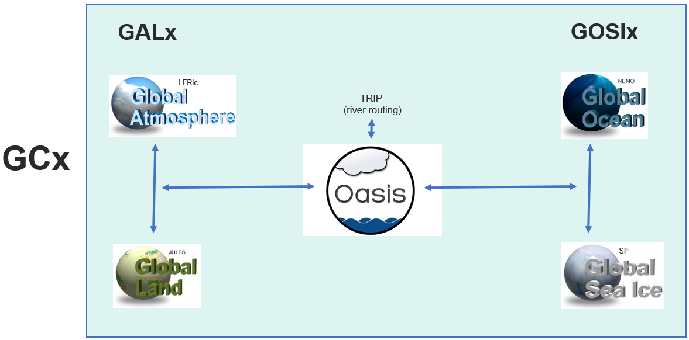
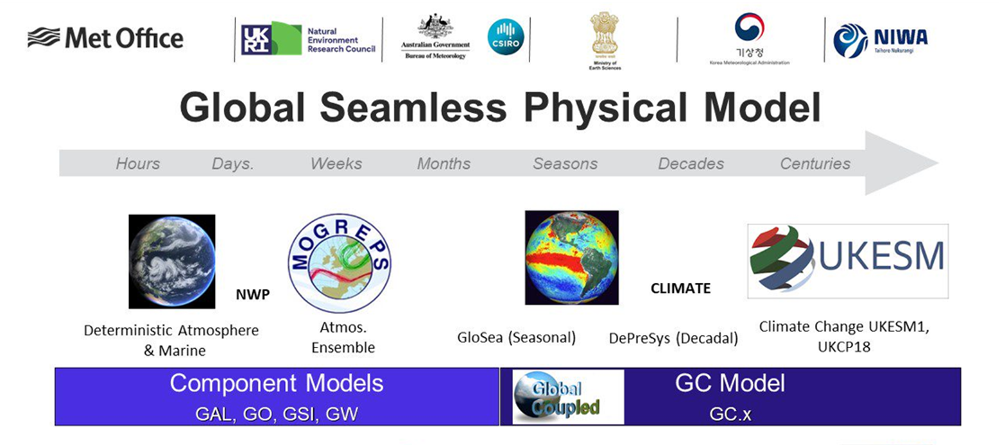
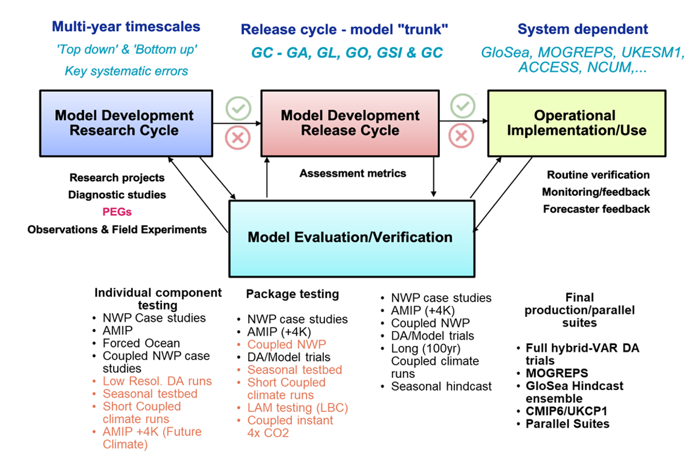
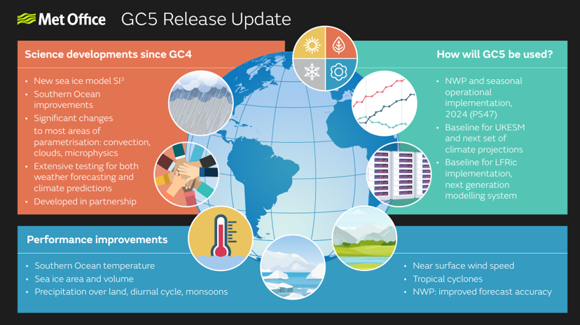
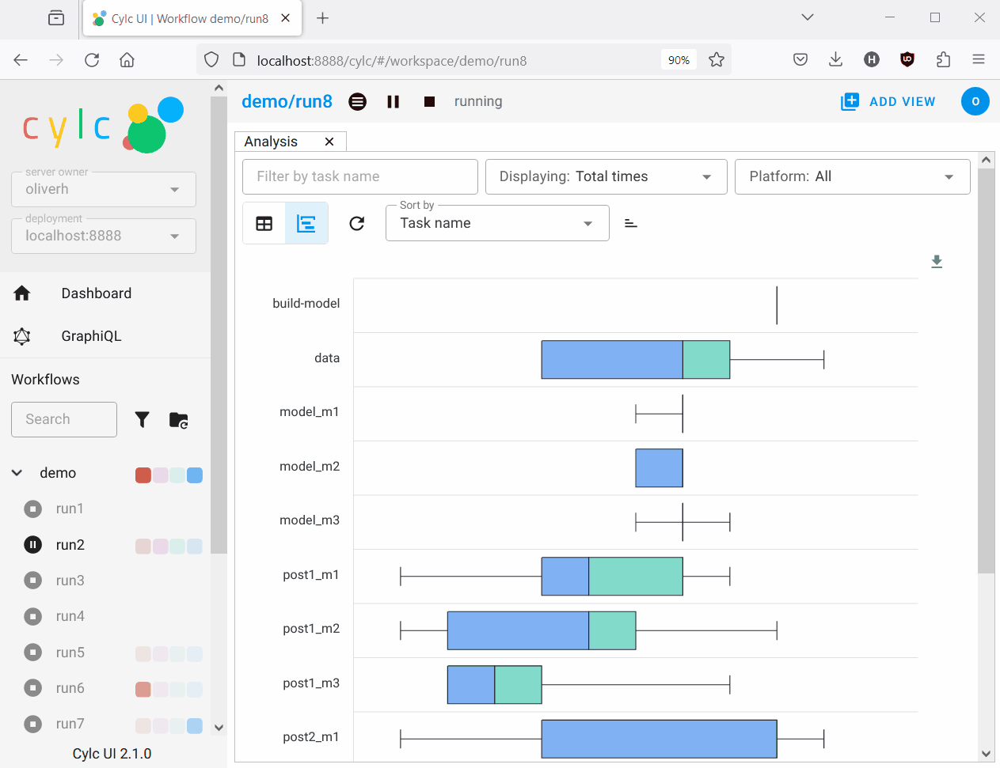
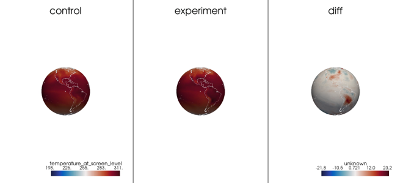

4. Global Modelling with LFRic
This module covers how the Met Office global models are developed, configured and run within the Momentum® Framework.
Aims and objectives
To understand how Met Office global models are developed
To be aware of working practices associated with model development
To become familiar with the MOSRS and wiki ticketing and documentation
To checkout, edit and run a global model
Introduction to Global Coupled (GC) configurations
The Met Office develops science configurations for their numerical models. In GC configurations the atmosphere and ocean are coupled and feedback to each other. Within Met Office science configurations, there are four component models that make up a GC configuration. Each GC configuration is then split into a GAL and a GOSI configuration, which are coupled by the OASIS coupler.
{kind=link}

A science configuration is frozen package of mature science settings which has been rigourously tested across seamless timescales from NWP to climate. The GC configuration is then used for different systems at the Met Office and across the Parntership. For example:
GC3.1 was implemented in UKESM1.1 for CMIP6
GC4 was implmented for PS45 (Met Offices operational suite for NWP)
GC4 was implmented for ACCESS-S1 (the Bureau of Meteorology’s seasonal system)
This means that the same science settings are used for all timescales and resolutions.
{kind=link}

Each GC configuration goes through an approximate 2-year development cycle, where it is tested for key systematic errors. The configuration has individual component testing and package testting, with continuous evaluation and verification.
Interested in getting involved in evalutaion of science configurations?
The 2-year development and evaluation cycle involves scientists from across the Patnership, with different centres bringing different expertise. One way to get involved is to join PEGs or CoGs. PEGs are ‘priority evaluation groups’ which focus on a few key systemic biases and this is a great way to become involved. If interested find the PEG or CoG lead on the GMED MOSRS pages and contact them. Or contact um_collaboration@metoffice.gov.uk.
{kind=link}

Task: Explore MOSRS, GitHub and wiki tickets
Go to the Met Office Science Repository Service and explore the Global Model Evaluation and Development pages. Where is the documentation stored, how are configurations released and what is the difference between a configuration and a UM/LFRic version.
In July 2022, the final UM-based GC configuration was released, ‘GC5’, before the implementation of the LFRic atmospheric model into GC configurations.
{kind=link}

Following GC5-UM, there was a project assocaited with the NGMS programme to develop a GC5-LFRic science configuration. This was a like-for-like LFRic version of GC5, for purely research purposes. The GC5-LFRic configuration is then taken as the baseline for GC6 development, which will be the first operational use of LFRic in a science configuration at the Met Office and across the Partnership. GC6 will be implmented in PS49 and in UKESM3 for CMIP8.
Tools for running GC model configurations
NWP and climate models have a large numbers of jobs are executed at regular intervals to process new data and generate new forecasts. Dependence between these forecast cycles creates a single never-ending workflow, which NWP workflow schedulers have traditionally ignored. Met Office science configurations are built on Rose and Cylc (“Silk”) to manage infinite cycling workflows efficiently even after delays in real-time operation, or in historical runs, when cycles can typically interleave for much-increased throughput.
Rose - managing model configurations
{kind=link}
Rose is a tool for writing, editing, updating and running configurations of applications
Rose allows top-level configuration of applications for workflows used for LFRic and UM model experiments
Developed by Met Office, but not LFRic specific (i.e. used for NEMO as well)
Rose configurations are directories containing a Rose configuration file along with other optional assets which define behaviours such as:
Execution.
File installation.
Environment variables.
Rose configurations may be used standalone or alternatively in combination with the Cylc workflow engine.
Why Use Rose Configurations?
With Rose configurations the inputs and environment required for a particular purpose can be encapsulated in a simple human-readable configuration. Configuration settings can have metadata associated with them which may be used for multiple purposes including automatic checking and transforming. Rose configurations can be edited either using a text editor or with the rose config-edit GUI which makes use of metadata for display and on-the-fly validation purposes.
Note
More information and training material: https://metomi.github.io/rose/doc/html/tutorial/rose/metadata.html
Cylc - workflow engine
Cylc is a general-purpose workflow engine to automate running groups of tasks in a specified order on computers
Cylc workflows can be organized running tasks at specific clock cycles
Cylc workflows represent the highest-level programming layer for organising the execution of our models, pre- and postprocessors
{kind=link}

Note
For comprehensive guides to cylc and training can be found here: https://cylc.github.io/cylc-doc and for online and discussions the cylc github discourse is a good place to start: https://cylc.discourse.group
Note
On Version Control -
Validation of GC configurations
At the Met Office and across the Partnership, continual evaluation and verification of model output is an essential part of the development of models. Comparison of model climatology with climatologies from observations or reanalyses is key to identify systematic biases or model trends.
The Met Office maintains routine tools for validation of GC configurations:

Practical 2 - Running a GC-LFRic Workflow
Aims and objectives
The aim of this practical is to gain experience in running and analyzing climate models.
Copy the GC5-LFRic climate model
Add extra diagnostics to the ocean, atmosphere and sea-ice
Running the climate model for 1 month on an HPC
Set up a range of other climate models where various parameters are changed to generate interesting results.
Visualize these results using Python/Iris.
Thought experiment: How would you design your experiment?
As scientists we want to explore how climate models perform and respond to changes. How sensitive are they to CO2 or what impact does an eddy parameterisation have on ocean circulation. Think about what parameters you would want to test within a global model? Once you have an idea, think about the next questions.
Where you might change this – is it in the configuration namelist settings within the workflow or in a source code?
Browse the source code and workflow to look see how you might make this change.
What diagnostic would you plot to see the change?
Caution
If you decide to test your own experiment with a code or configuration change, be ready to do lots of debugging! If you want an example which is tried and tested, use the given examples below.
Main Practical
Run a simulation a with different experimental setup
Either use an existing experiment or your previous hypothesis
Create a branch for each new experiment (to limit the new workflow IDs created)
Plot the data and look for evidence of changes
Note
Feel free to enlarge the size of these changes (e.g. 20x CO2) if your analysis is not detecting much of an impact. Copy the output files (files explained at the end of the last section) to your local Linux workstation and analyse the files using Python/Iris. Try to plot differences between the experiments and the control in the fields that you think will be most strongly affected. If possible make a prediction at what these differences might show before you do the plots. Were your predictions right?
Adding a new diagnostic
The atmospheric diagnostic “v component of wind on pressure levels” is missing from this model. Use the following instructions to add it back to the configuration.
cd into ``app/lfric_atm/file``
open
file_def_diags_user_temp.xmlfind ``lfric_pressure_level_tdaym``
add in a new field for
v_in_w3
<field field_ref="processed__pressure_in_w3"/>
<field field_ref="u_in_w3"/>
<field field_ref="v_in_w3"/>
<field field_ref="w_in_w3"/>
</field_group>
Experiment 1 - CO2 x 10
cd into
app/lfric_atmopen the
rose-app.confsearch for
co2_mix_ratiochange this value from 5.60353e-04 to 5.60353e-03
[namelist:well_mixed_gases]
cfc113_mix_ratio=0.0
cfc11_mix_ratio=0.0
cfc12_mix_ratio=4.3919e-09
ch4_mix_ratio=9.8200e-07
co2_mix_ratio=5.6062e-03
hcfc22_mix_ratio=0.0
hfc134a_mix_ratio=3.6811e-10
n2_mix_ratio=0.7553
n2o_mix_ratio=4.7957e-07
o2_mix_ratio=0.2314
so2_mix_ratio=0.0
Experiment 2 – Reduce the rotation of the earth
cd
app/lfric_atmopen
rose-app-confchange
omega
[namelist:planet]
cp=1005.0
gravity=9.80665
omega=7.292116E-5
p_zero=100000.0
radius=6371229.0
rd=287.05
scaling_factor=1.0
Experiment 3 – coupling remove influence of evaporation from ocean
cd
app/coupled/fileopen
namcoupleObserve namcouple file – what is it setting?
adjust definition of coupling for
lf_evap
lf_evap OTotEvap 466 3600 2 atmos_restart.nc EXPORTED
24576 1 1442 1207 lfric tor1 SEQ=+2
P 0 P 2
#
MAPPING
##
rmp_lfric_to_tor1_nomask_CONSERVE_DSTAREA.nc
0.0 0
#
Note
Note on the namcouple file
Experiment 4 – make sea ice black
create JULES branch - See: Working Practices: Create a ticket, Working Practices: Create a branch
adjust hard coded values for the albedo in
src/control/shared/jules_sea_seaice_mod.F90(setcalbicev_cice,albicei_cice,albsnowv_cice,albsnowi_cice,albpondv_cice,albpondi_cice,dalb_mlt_cice,dalb_mlts_v_ciceanddalb_mlts_i_ciceto 0.0)point your LFRic build setup in
paramerts.shto you JULES branch and adjust your workflow to use your adjusted model buildbuild the model and run your experiment
! Parameters for 4-band CICE albedo scheme used within JULES:
albicev_cice = 0.00, &
! Sea ice albedo (visible)
albicei_cice = 0.00, &
! Sea ice albedo (near-infrared)
albsnowv_cice = 0.00, &
! Snow albedo (visible)
albsnowi_cice = 0.00, &
! Snow albedo (near-infrared)
albpondv_cice = 0.00, &
! Meltpond albedo (visible)
albpondi_cice = 0.00, &
! Meltpond albedo (near-infrared)
ahmax = 0.3, &
! Sea ice albedo in CICE multi-band scheme is constant above this
! thickness (metres)
dalb_mlt_cice = -0.075, &
Plotting your data
Script:/home/h02/lroberts/ngux/lfric_exercise/iris_ngux_module3.py
Select data for your control and experimental setups
Choose the diagnostic to plot
Run the script
{kind=link}
